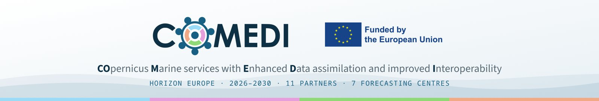
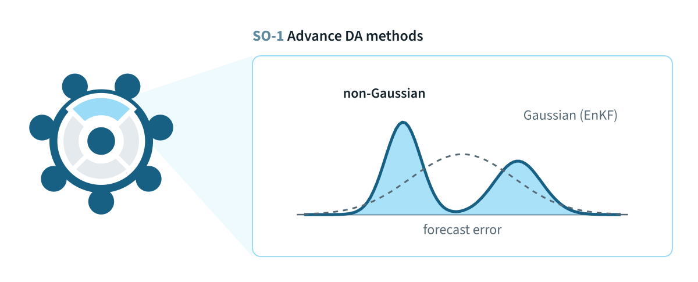
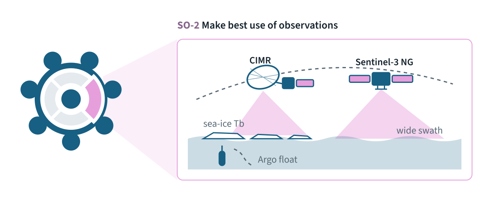
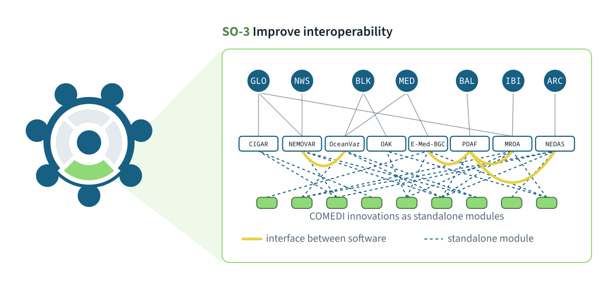
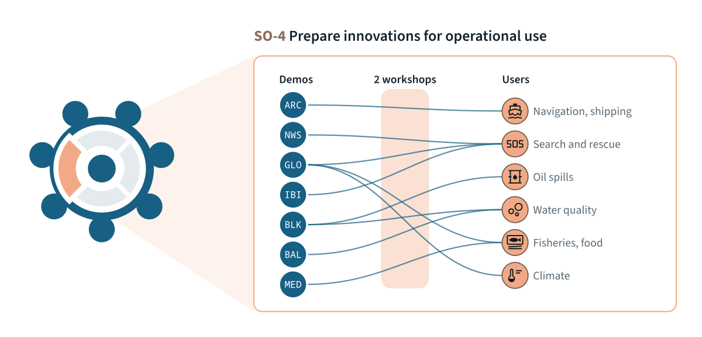

In preparation, due 30 November 2026. The project website, a common visual identity with logo, colours and typefaces, templates for reports and presentations, and a first set of social media visuals.




